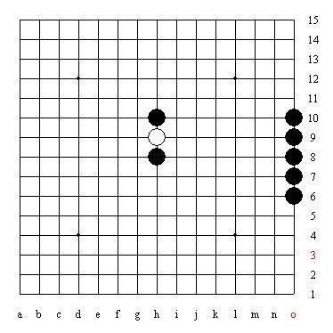
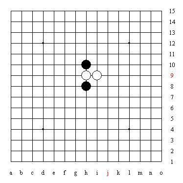
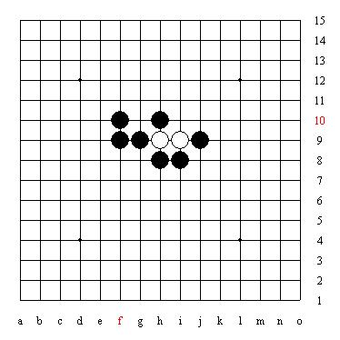
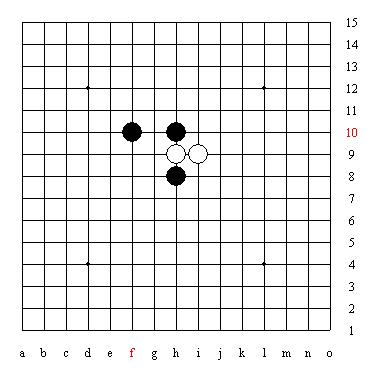

山口規則說明
１大會決定開局方
２開局方在２６開局選擇一種(黑一在天元，白二在距離天元一線內，黑三在第二線以內)，並宣告第五手需要的打數Ｎ(將Ｎ顆黑子擺在棋盤邊緣，Ｎ最少為１)。
例：假設開局方開寒星，就在棋盤上排出寒星（開局方並不需要知道開局名稱，只要排出開局即可）
並把５顆黑子放在棋盤邊緣，代表打數為５（如果只開３打就放３顆）

３另一方可選擇持黑或持白。（至此黑白方確定）
例：若另一方選黑子，則拿走５顆棋子，若選白子，請開局方把拿走５顆棋子
４白方下出第四手。
白方的第四手沒有任何限制

５黑方下出Ｎ個不同型（不對稱）的著點，由白方選擇
例：黑方把一開始的５顆子放到棋盤上，請注意５個點不能有任兩個點有同型的情況（如已經放了一子在i8，就不能在i10再放子，因為這兩點同型）

６白方選定一黑五之後，將其餘打點移出棋盤外
例：白方選擇F10當第五手，將其他４子拿掉

之後換白子下第六手
開局階段結束，之後黑白輪流落子，按連珠規則繼續進行，黑有禁手。
其他說明：
１山口規則規定從２６開局選擇，為的是豐富開局變化
２另一方可選擇持黑或白，是防止開局方開出一方必勝的變化
３另一方持黑或白的判斷依據就是看黑子的打數，如某個開局黑的打數太少，則第五手黑優的點很多，另一方自然選黑子，反之，另一方會選白子，所以開局者只能選擇黑白都可以接受的打數
４白方的第四手通常會下在最強的點，使黑五可下的變化滅少
５黑五必須下出開局時要求的打數，儘量放在對黑最有利的點，但注意不可同型（一開始在開局時或選擇持黑或白時就要考慮到黑能否下出所要求的打數）
６白方在選擇黑五時，自然選擇打數中對黑子最不利的點